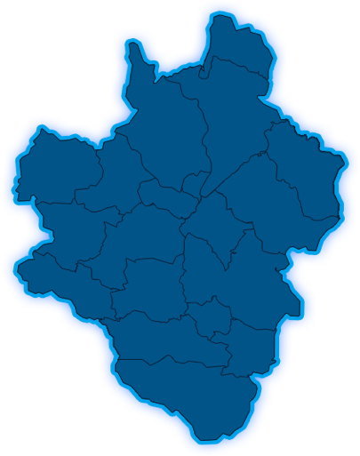

全县共
350
个产业扶贫基地
全县共
1000
家合作社
全县共
698
个产业扶贫车间
卢氏县产业布局规划
北部地区
以官通口镇、杜关镇、沙河乡为主，突出抓好特色养殖业，林果业，稳定烟草产业；
西部地区
以双龙湾镇、徐家湾乡、潘河乡、木桐乡为主，重点抓好中药材产业、特色养殖业的同时，在食用菌产业上实现新突破；
南部地区
以朱阳关镇、五里川镇、瓦窖沟乡、双槐树乡、狮子坪乡、汤河乡、官坡镇为主，全力抓好食用菌产业，兼顾发展中药材产业、林果业；
中部地区
以东明镇、范里镇、文峪乡、横涧乡为主、着力抓好特色养殖业和林果业，兼顾发展烟草和休闲农业，围绕易地搬迁脱贫安置社区建设，大力发展食用菌产业
产业联结
龙头企业带动
每个产业
2
个
合作社组织
全县
1000
个
农户平均参与
每户产业
2
个
基地承载总数
全县
350
个
产业
金额（元）
占比
绿色农业
108917.64
88.4%
特色工业
5150.178
4.18%
现代服务业
9142.182
7.42%